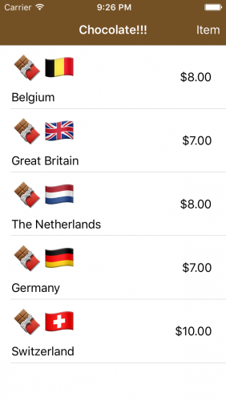
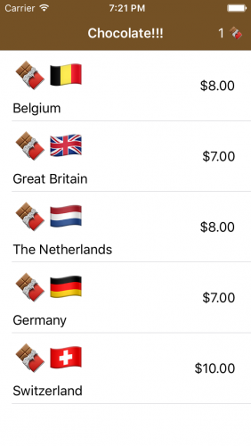
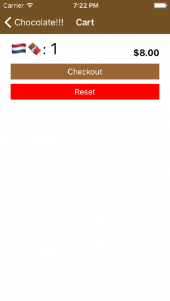

RxSwift和RxCocoa入门
文章目录
本文主要来自Getting Started With RxSwift and RxCocoa这篇文章
命令式编程 vs 响应式编程
-
目前大部分面向对象语言都是命令式的编程范式，即通过代码下达命令给系统；虽然可以通过各种技术手段知道数据的变化，但是不能做到自动化地通知。
-
响应式编程则是想让数据的变化可以自动地通知，你不再需要关心特定状态，这个状态通知到响应的过程，响应式编程（库）已经帮你处理了。
维基百科上有一个更明确的例子：
对于命令式编程，当a = b + c, a由b+c计算得到；但是之后，b和c发生了变化，这个变化对a并不生效，a还是保持原有的值；而当使用响应式编程时，当b和c发生变化，程序不需要再次执行a = b + c公式，a的值就会自动更新。
响应式编程库现状
目前分为两派
-
ReactiveX主导的rx系列库，语言支持如RxSwift, RxKotlin, 平台支持如RxAndroid, RxCocoa(iOS)；
-
ReactiveCocoa(GitHub发起)库，语言仅支持swift，objective-c，平台仅支持iOS。
相同点：
-
都是Reactive Functional Programming（响应式函数编程）的实现
-
二者github star数不分伯仲，均接近20k级别
-
都有很好的社区支持
不同点：
-
Hot、Code Signal实现API不同：RAC设计了两个api分别对应hot、code signal，RxSwift仅有一个
-
错误处理，RAC相对容易一些
-
UI Bindings，RAC有不少历史包袱，RxSwift则更容易使用
-
Rx系列支持更多语言和平台
关于这两个库的详细对比，见：ReactiveCocoa vs RxSwift
RxSwift和RxCocoa
RxSwift: 响应式编程在Swift语言领域的实现库
RxCocoa: 针对Cocoa平台（iOS & Mac OS）的响应式编程库
Observables and Observers
一个Observable发送变化通知
一个Observer订阅一个Observable，当Observable有变化时会被通知
多个Observer可以监听一个Observable，当发生变化时，所有Observer都会被通知
DisposeBag
DisposeBag是RxSwift提供的处理ARC和内存管理的工具。销毁一个父对象时，会使得DisposeBag中的Observer对象同时销毁。
当持有DisposeBag的对象的deinit()调用时，每个disposable Observer都会取消对监听对象的订阅，这时ARC就可以正常回收内存了。
如果没有DisposeBag的话，可能会出现两种情况，要么是observer会保留下来不被销毁，继续监听；要么被释放，造成崩溃。
建立Observer对象时，记得同时添加到DisposeBag中，来让DisposeBag帮助你回收该对象。
开始吧
先下载示例工程
打开编译后即可看到如下界面
这个例子功能很简单：选择巧克力后，会将其加入到购物车，点击右上角购物车图标可以进入购物车，然后进行结账和模拟支付。
非reactive的实现
在ChocolatesOfTheWorldViewController.swift中可以看到实现UITableViewDelegate和UITableViewDataSource的extension。
在观察一下updateCartButton()这个方法，它用来更新购物车中的巧克力数量，在下面两种情况时调用：
-
viewWillAppear(_:)：在view controller显示之前 -
tableView(_:didSelectRowAt:)：当点击列表，添加巧克力到购物车时
这就是命令式编程方式实现：你必须手动调用方法来更新购物车巧克力数量。
使用RxSwift改写购物车商品数量
购物车商品信息保存在ShoppingCart.sharedCart这个单例中
定义在ShoppingCart.sharedCart中：
|
|
虽然可以给其定义中添加一个didSet闭包，但问题是，这种做法只能在整个数组更新时才能被通知，而不是数组中任意元素变化就可以得到通知。
针对这种情况，RxSwift提供了解决方案，按照如下方式创建chocolates变量：
|
|
使用RxSwift的BehaviorRelay对象，持有一个Chocolate数组类型的值。这么做的目的是：通过BehaviorRelay对象的asObservable()可以得到一个observable，这样我们就可以添加监听者来订阅BehaviorRelay对象的value（chocolate数组）的变化。
上述做法的缺点是，对chocolate数组的修改必须修改为使用accept(_:)，这是BehaviorRelay为修改value属性提供的方法。由于对数据的访问方式发生了变化，代码中相应的地方也要做修改。
在ShoppingCart.swift中
totalCost()方法的修改：
|
|
itemCountString()方法的修改：
|
|
在CartViewController.swift中
reset()方法的修改：
|
|
在ChocolatesOfTheWorldViewController.swift中
updateCartButton()方法的修改：
|
|
tableView(_:didSelectRowAt:)方法的修改：
|
|
完成上述修改后，我们就可以来对chocolates添加observer了。
在ChocolatesOfTheWorldViewController.swift中，新增：
|
|
上述代码即可实现对购物车的自动更新。
可以看到，RxSwift大量使用函数链，就是说每一个函数接收前一个函数的结果。
对上述代码的解释：
-
从购物车中
chocolates得到一个Observable -
对
Observable调用subscribe(onNext:)来监听其值变化。subscribe(onNext:)接收的闭包在每次值变化时都会被执行。闭包中的入参就是Observable变化后的最新值。除非你取消订阅，或者dispose订阅，你会一直收到变化通知。这个方法的返回的一个Disposable（也是一个Observer）。 -
将上一步返回的
Observer加入到我们的定义disposeBag中。这会让被订阅对象被销毁时，订阅者也被处理。
最后，删除updateCartButton()方法的调用。
然后执行代码，你会看到巧克力列表：

但此时，点击单个巧克力，购物车位置一直显示的是“Item”。这是因为setupCartObserver()没有被调用，导致Observer并没有建立起来。在ChocolatesOfTheWorldViewController.swift的viewDidLoad()方法最后调用该它。
再次编译运行，就会看到，当点击巧克力时，购物车自动更新了。

使用RxCocoa对TableView进行Reactive改造
RxCocoa为原生UI组件添加了响应式API。这本例中，使用TableView的响应式API，可以不再用自己实现UITableViewDataSource和UITableViewDelegate。
实现步骤：
第一步：代码中删掉data source和delegate相关代码。
第二步是将table view使用到的数据从数组，改为一个Observable：
|
|
just(_:)表明Observable持有的值（value）是不变的。
注：对于不变化的值，是没有必要使用响应式编程的。所以在实际应用中，要避免拿着锤子看什么都是钉子，要实际分析一下你是否真的需要使用Rx。
第三步在//MARK: - Rx Setup添加如下代码：
|
|
代码释义：
-
调用
bind(to:)将europeanChocolates这个Observable关联到table view每行所要执行的代码上 -
调用rx后，让你可以访问table view的Rx扩展
-
代用Rx方法
items(cellIdentifier:cellType:)传递相关参数。这样Rx框架根据这些信息实现一个wrapper data source，再设置给table view。 -
当拿到了新的cell item时，通过这个block来进行设置
-
将bind方法结果加入到disposeBag
再在viewDidLoad中调用下上面的setupCellConfiguration()方法。
这时运行程序，就会再次看到巧克力列表数据。

第四步来添加事件处理：
在//MARK: - Rx Setup位置添加如下代码
|
|
代码释义：
-
modelSelected(_:)传入Chocolate model类型，得到Observable对象 -
subscribe(onNext:)是给Observable对象注册事件处理，这个闭包代码会在一个model被选中时调用 -
闭包中首先将选中的chocolate加入到购物车
-
反选table row
-
将
subscribe(onNext:)返回的Disposable加入到disposeBag
最后在viewDidLoad中调用setupCellTapHandling()
然后运行，就可以看到经过Rx API重写过的样例功能，和之前一样：点击列表中的巧克力，将他们添加到购物车中。
使用RxSwift处理用户输入（Direct Text Input）
RxSwift也可以用来处理用户输入和表单验证。
非Reactive的做法是，实现UITextFieldDelegate，然后实现很多if/else来分别处理输入及其对应的动作。
Reactive Programming的做法则是更直接地将输入处理动作和逻辑绑定到input field上。
我们可以通过下面这个例子来具体体会一下。
先在BillingInfoViewController.swift中创建一个DisposeBag：
|
|
然后在//MARK: - Rx Setup评论下的extension中添加如下代码：
|
|
代码释义：
-
给
BehaviorRelay的值添加一个Observable -
订阅这个
Observable来获得cardType的变化 -
将
Observer的销毁交给disposeBag
上述代码就实现了一个Reactive的例子：当cardType变化时，creditCardImageView的图片会变成对应type定义的图片。接下来实现对文字变化的处理。
考虑到用户输入可能会很快，如果每次输入都执行验证代码可能会导致UI卡顿。所以我们需要实现一个throttle来控制，在throttle的时间间隔后才会再次验证输入，这样就可以避免对UI的阻塞。
RxSwift是支持Throttling的，因为有不少场景需要控制对变化的响应频次。下面我们来看看如何实现。
首先，在BillingInfoViewController中定义一个常量来表示throttle的间隔毫秒时间：
|
|
然后，在RX Setup extension中加入下面的代码：
|
|
代码释义：
-
text是RxCocoa的扩展，它从一个UITextField获得其value的一个Observable
-
基于之前定义的throttle时间间隔，创建一个throttle；scheduler目前先绑定到主线程
-
将结果交由给
validate(cardText:)，它可以将输入转换为creditCardValid的值，如果输入有效，creditCardValid的值会是true -
监听creditCardValid，根据其结果来改变text field的状态
-
销毁事宜
实现CVV的校验和上述思路一样。
先在setupTextChangeHandling()底部添加如下代码：
|
|
最后，将三个text field结合起来做验证，在setupTextChangeHandling()加入以下代码：
|
|
combineLatest(_:)将三个observable结合到一起再生成一个observable，everythingValid的值会是true或false。接着再讲everythingValid关联到purchaseButton的rx扩展属性isEnabled，以此来实现对该button是否可用状态的控制。
最后，在viewDidLoad中添加如下代码：
|
|
运行代码，然后选择巧克力后，进入购物车：

然后点击checkout，进行支付界面：
这里可以看到，输入4，后面图标就显示了visa的图标。
接着，输入合法的CVV和有效期限，Buy Chocolate按钮就是可用状态了：

至此，我们就实现了一个简单的对用户输入以reactive方式进行校验的示例。
文章作者 teoking
上次更新 2021-05-06